Institucional · Parcerias
Parcerias
A FAG estabelece parcerias institucionais para fortalecer a educação, a formação profissional, a ciência, a tecnologia e o desenvolvimento social.
Conheça as instituiçõesUma rede de colaboraçãoEducação · Tecnologia · Desenvolvimento
Colaboração institucional
Conexões que ampliam oportunidades.
A cooperação entre instituições aproxima conhecimentos, experiências e capacidades. Para a FAG, essas conexões fazem parte de uma atuação voltada à educação e ao desenvolvimento de Tanguá.
Ao cultivar relações de colaboração, a Fundação busca ampliar oportunidades de qualificação, incentivar a pesquisa e a inovação e contribuir para o desenvolvimento social e econômico do território.
Nossa rede
Instituições parceiras
Organizações que integram a rede de
colaboração institucional da FAG.
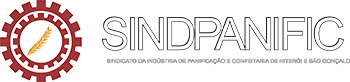
Sindicato das Indústrias de Panificação e Confeitaria de Niterói e São Gonçalo
Visitar instituição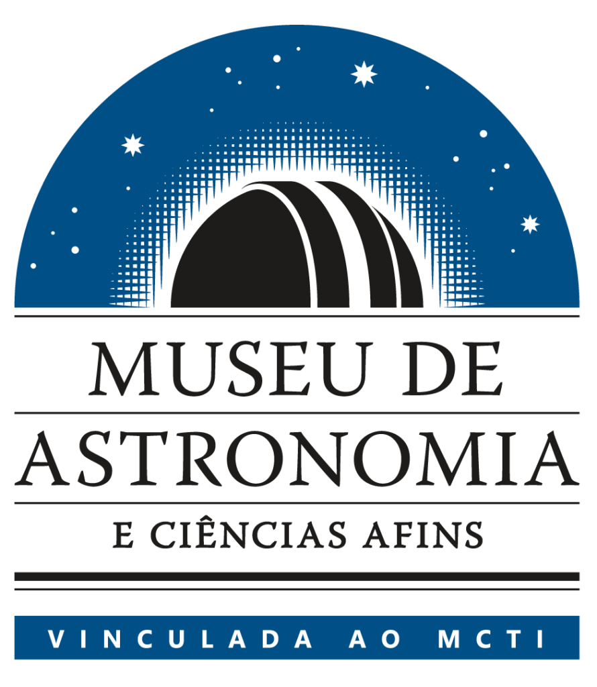
Museu de Astronomia e Ciências Afins
Visitar instituiçãoSecretaria de Estado de Educação do Rio de Janeiro
Visitar instituiçãoPesagro-Rio
Visitar instituição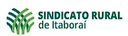
Sindicato Rural de Itaboraí

Ministério da Educação
Visitar instituição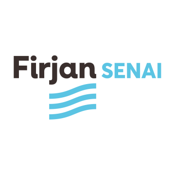
Firjan SENAI
Visitar instituição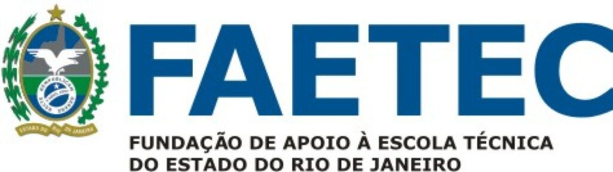
Fundação de Apoio à Escola Técnica do Estado do Rio de Janeiro
Visitar instituição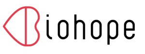
Biohope
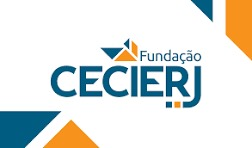
Fundação CECIERJ
Visitar instituição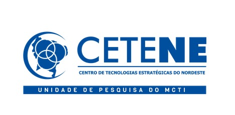
Centro de Tecnologias Estratégicas do Nordeste
Visitar instituição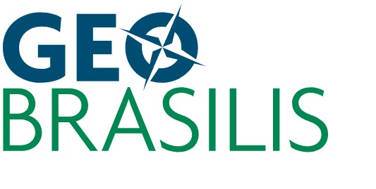
Geo Brasilis
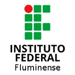
Instituto Federal Fluminense
Ministério da Ciência, Tecnologia e Inovação
Visitar instituição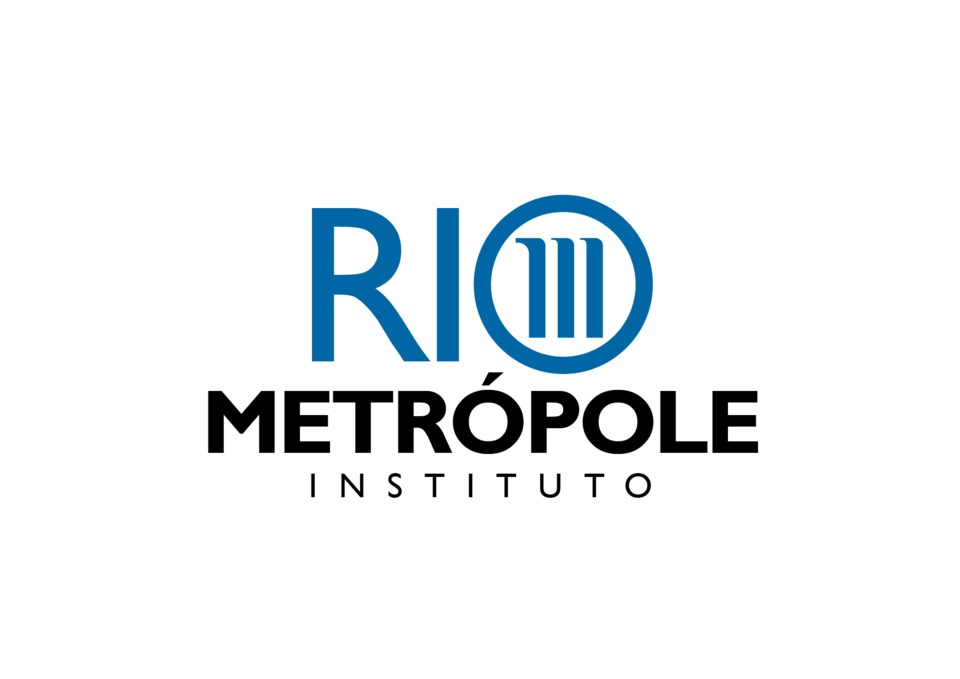
Instituto Rio Metrópole
Secretaria de Estado de Trabalho e Renda do Rio de Janeiro
Visitar instituição
Vamos conversar
Sua instituição deseja
colaborar com a FAG?
Entre em contato para conversar sobre possibilidades de colaboração institucional e objetivos em comum.